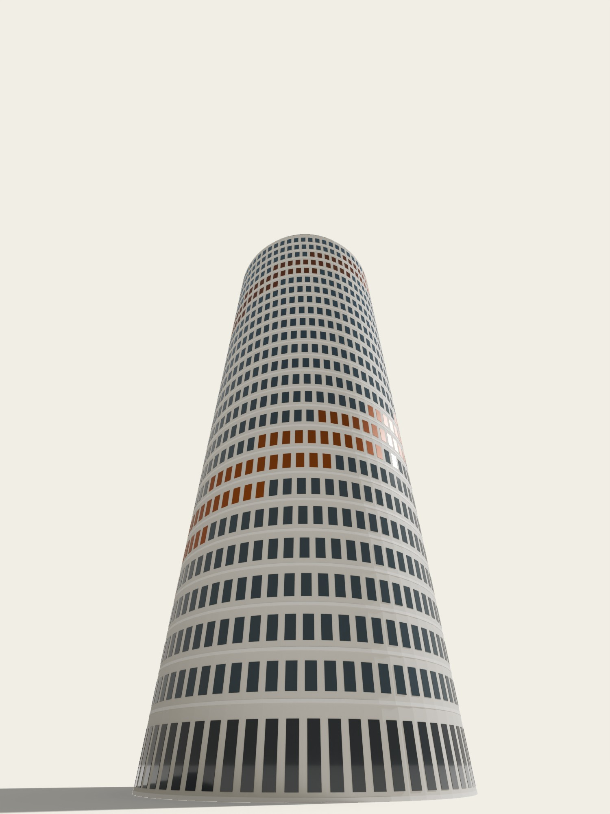
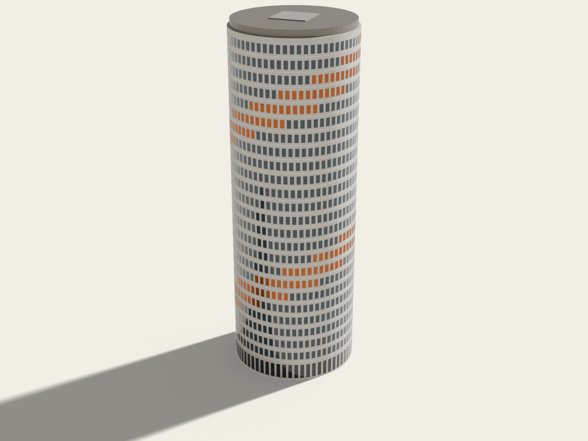
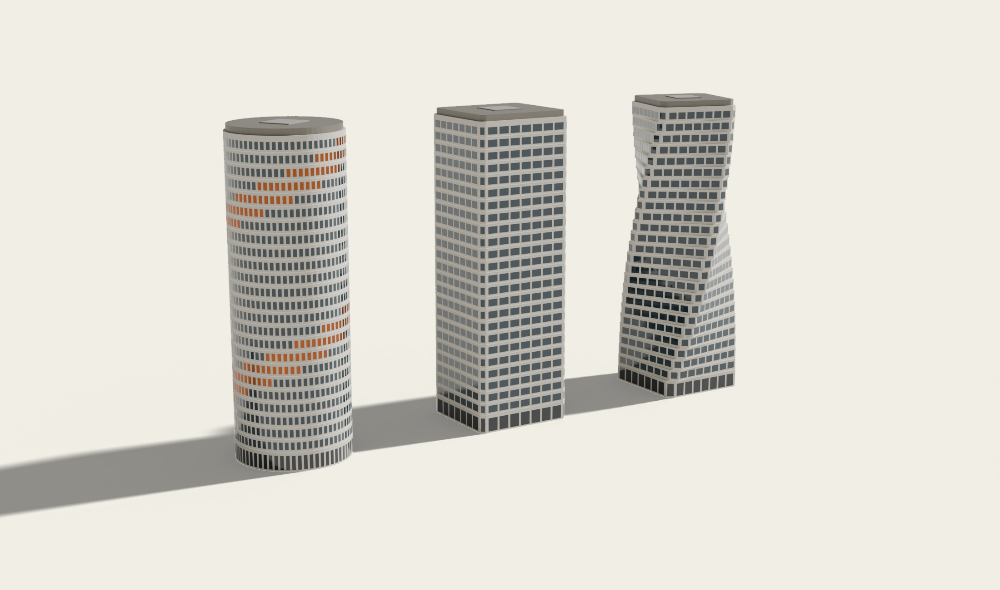
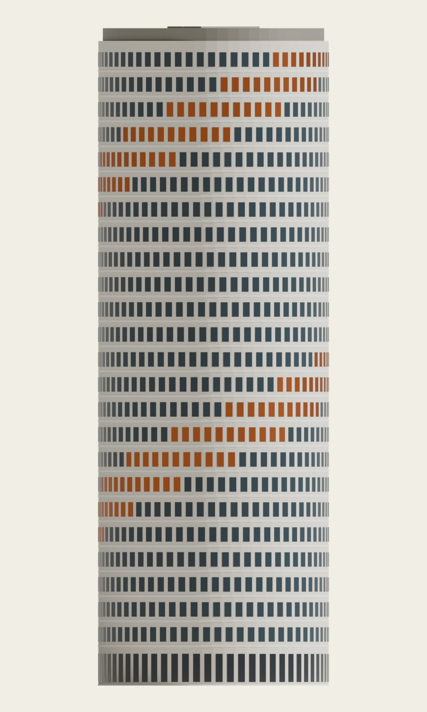
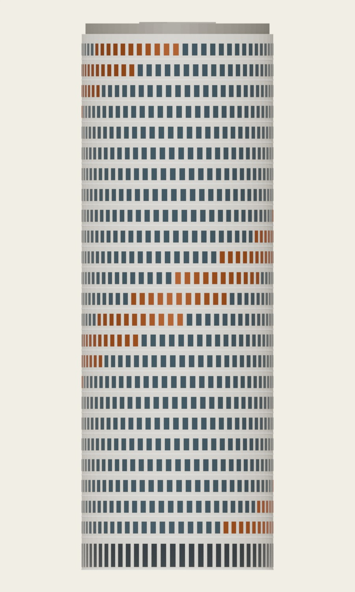
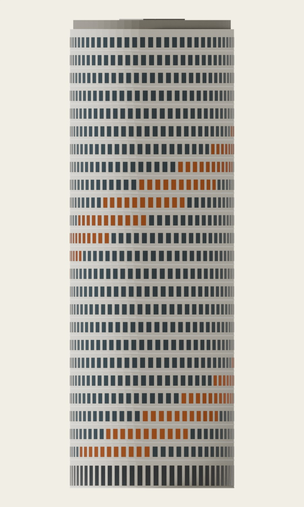
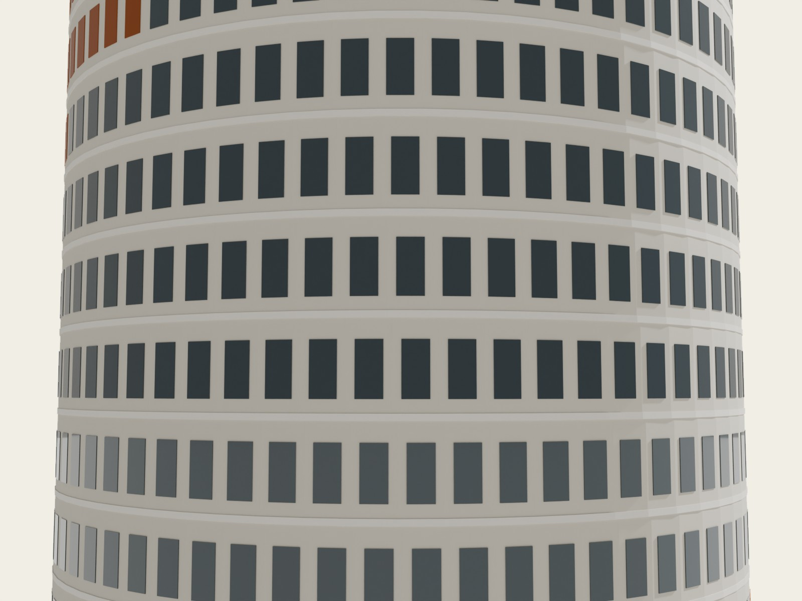
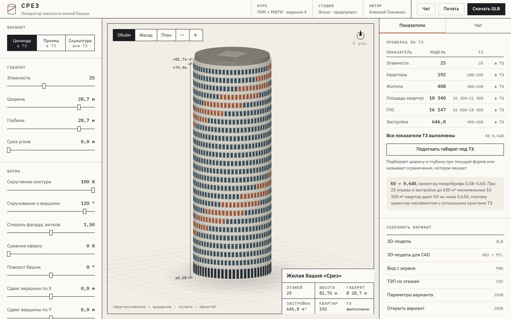

Жилая башня, 25 этажей · Ø 28,7 м · 81,76 м. Цилиндр со скручиванием 120° и медной спиралью фасада — единственная скульптурная форма, которая помещается в ТЗ
Эскизный проект, предпроектная стадия. Модель, расчёты и все листы альбома получены из одного инструмента — «Срез», генератора массинга. Рендеры — Blender 5.1 Cycles по экспорту GLB
ТЗ задаёт почти жёсткую призму: запас между требуемой площадью этажа и пределом застройки меньше 1 %
Квартирам нужно не меньше 10 300 м². Первый этаж общественный, значит их несут 24 этажей. ОРП этажа = (ГНС этажа − 133 м² ядра и коридоров) × 0,84. Отсюда средний жилой этаж — не меньше 643,9 м²
Площадь застройки — проекция всего объёма на землю — ограничена 650 м². Любой этаж, сдвинутый, повёрнутый или увеличенный относительно соседних, расширяет проекцию. При коридоре 644–650 м² на это остаётся меньше 1 %
Скручивание, наклон, сужение и каскад выводят застройку за предел уже на первых градусах — это видно на следующем листе. Скульптурным в этом коридоре может быть только тело вращения: круг при повороте даёт ту же проекцию
Поэтому башня — цилиндр Ø 28,7 м, скрученный на 120° к вершине. Поворот читается по сдвигу оконной сетки и по медной спирали простенков, которая делает 1,5 витка по высоте. Площади она не меняет
Ориентир микробрифа 0,58–0,60 несовместим с остальными пунктами: при ГНС ≤ 16 250 м² (25 × 650) и ОРП ≥ 10 300 м² К0 не ниже 0,634. У варианта К0 = 0,640. Это раскрыто, а не подогнано

Три варианта одного инструмента и площадь застройки при скручивании

| Вариант | Габарит | Форма | Застройка | ГНС | ОРП | |
|---|---|---|---|---|---|---|
| Цилиндр | Ø 28,7 м | 120° | 646,8 | 16 147 | 10 340 | в ТЗ |
| Призма | 26,4 × 24,6 м | 0° | 646,6 | 16 164 | 10 353 | в ТЗ |
| Скульптура | 25,2 × 25,8 м | 75° · сужение 12 % | 793,4 | 14 240 | 8 740 | вне ТЗ |
Кнопка «Подогнать габарит под ТЗ» ищет наибольший габарит, при котором застройка ≤ 650 м². Для скульптуры ответ: при застройке 650 м² квартир лишь около 6 700 м², форма в ТЗ не помещается. Скручивание призмы на 15° добавляет 70 м² застройки, на 45° — 196 м²; цилиндр не меняется
Ортогональные виды, сняты с той же 3D-модели



Окна на модуле 300 мм, медные простенки по спирали

Окружность этажа разбита на 64 грани по ≈ 1,41 м. На каждой — окно с шагом, кратным 300 мм. Высота окна 1,8 м на типовых этажах и 3,5 м на первом
Простенок окрашивается в медь, если его угол попадает в ленту шириной 17 % окружности, которая поднимается на 1,5 витка от земли до кровли. Вместе с поворотом этажей на 5,00° лента и сетка дают два ритма: медленный поворот объёма и быструю спираль
Торец перекрытия 220 мм выступает пояском. Ограждение и солнцезащита не проектировались — это следующая стадия
Этажи 2–24 · условная раскладка квартир вокруг ядра
Ядро ЛЛУ 10,8 × 11,4 м в центре, восемь квартир по кругу. Каждая квартира получает отрезок фасада, глубина от ядра до фасада 6,5–9,0 м
| Тип | На этаже | ОРП, м² | На дом |
|---|---|---|---|
| Студия | 2 | 27,9 | 48 |
| 1-комнатная | 3 | 43,9 | 72 |
| 2-комнатная | 2 | 71,8 | 48 |
| 3-комнатная | 1 | 99,7 | 24 |
| Итого | 8 | 430,8 | 192 |
Квартирография — авторская гипотеза: 2 × 28 + 3 × 44 + 2 × 72 + 1 × 100 м², пропорционально приведённая к расчётной ОРП этажа 430,8 м². Комнаты, двери, инсоляция и пожарные решения не разрабатывались
Отметки этажей и завершения
Первый этаж 4,80 м — общественный, с лобби и сервисами. Типовые этажи 3,10 м, последний 3,86 м по микробрифу. Над кровлей — парапет и техническое завершение 1,8 м
Отметка кровли +79,96 м, завершения +81,76 м. Подземных этажей в варианте нет
25 этажей приняты по слайду задания. Микробриф рекомендует уровень 24 этажа — отличие требует согласования
Сравнение с ТЗ задания
| Показатель | ТЗ | Модель | Статус |
|---|---|---|---|
| Этажность | 25 | 25 | в ТЗ |
| Квартиры | 180–230 шт. | 192 шт. | в ТЗ |
| Жители | 380–430 чел. | 408 чел. | в ТЗ |
| Площадь квартир, ОРП | 10 300–11 500 м² | 10 340 м² | в ТЗ |
| Площадь здания, ГНС | 16 000–18 000 м² | 16 147 м² | в ТЗ |
| Площадь застройки | 450–650 м² | 646,8 м² | в ТЗ |
ГНС — сумма площадей надземных этажей по наружному контуру. Площадь застройки — объединение проекций всех этажей. ОРП этажа = (ГНС − ЛЛУ 104,4 − МКК 28,6) × 0,84 — эскизная методика микробрифа
Квартир 8 на этаж, жителей 17 на этаж — сценарная оценка. Км1 и Км2 не рассчитаны: методика и пресет заказчика не предоставлены
К0 = ОРП / ГНС = 0,640. Ориентир 0,58–0,60 при этом ТЗ недостижим, см. лист 2
Из инструмента, без ручных правок
| Этаж | Назначение | Отметка, м | Высота, м | ГНС, м² | ОРП, м² | Квартир | Жителей |
|---|---|---|---|---|---|---|---|
| 1 | Первый, общественный | +0,00 | 4,80 | 645,89 | 0,00 | 0 | 0 |
| 2 | Жилой | +4,80 | 3,10 | 645,89 | 430,83 | 8 | 17 |
| 3 | Жилой | +7,90 | 3,10 | 645,89 | 430,83 | 8 | 17 |
| 4 | Жилой | +11,00 | 3,10 | 645,89 | 430,83 | 8 | 17 |
| 5 | Жилой | +14,10 | 3,10 | 645,89 | 430,83 | 8 | 17 |
| 6 | Жилой | +17,20 | 3,10 | 645,89 | 430,83 | 8 | 17 |
| 7 | Жилой | +20,30 | 3,10 | 645,89 | 430,83 | 8 | 17 |
| 8 | Жилой | +23,40 | 3,10 | 645,89 | 430,83 | 8 | 17 |
| 9 | Жилой | +26,50 | 3,10 | 645,89 | 430,83 | 8 | 17 |
| 10 | Жилой | +29,60 | 3,10 | 645,89 | 430,83 | 8 | 17 |
| 11 | Жилой | +32,70 | 3,10 | 645,89 | 430,83 | 8 | 17 |
| 12 | Жилой | +35,80 | 3,10 | 645,89 | 430,83 | 8 | 17 |
| 13 | Жилой | +38,90 | 3,10 | 645,89 | 430,83 | 8 | 17 |
| 14 | Жилой | +42,00 | 3,10 | 645,89 | 430,83 | 8 | 17 |
| 15 | Жилой | +45,10 | 3,10 | 645,89 | 430,83 | 8 | 17 |
| 16 | Жилой | +48,20 | 3,10 | 645,89 | 430,83 | 8 | 17 |
| 17 | Жилой | +51,30 | 3,10 | 645,89 | 430,83 | 8 | 17 |
| 18 | Жилой | +54,40 | 3,10 | 645,89 | 430,83 | 8 | 17 |
| 19 | Жилой | +57,50 | 3,10 | 645,89 | 430,83 | 8 | 17 |
| 20 | Жилой | +60,60 | 3,10 | 645,89 | 430,83 | 8 | 17 |
| 21 | Жилой | +63,70 | 3,10 | 645,89 | 430,83 | 8 | 17 |
| 22 | Жилой | +66,80 | 3,10 | 645,89 | 430,83 | 8 | 17 |
| 23 | Жилой | +69,90 | 3,10 | 645,89 | 430,83 | 8 | 17 |
| 24 | Жилой | +73,00 | 3,10 | 645,89 | 430,83 | 8 | 17 |
| 25 | Жилой | +76,10 | 3,86 | 645,89 | 430,83 | 8 | 17 |
| Итого | 16 147,15 | 10 339,90 | 192 | 408 |
«Срез» — генератор массинга с проверкой по ТЗ, чатом и экспортом

Параметры формы → поэтажная геометрия → ГНС, ОРП, застройка, К0 → проверка по шести пунктам ТЗ с величиной отклонения. «Подогнать под ТЗ» находит габарит или называет ограничение, которое мешает. Чат меняет форму через JSON со строгой схемой: сервер проверяет каждое значение по сетке параметров, отмена в один клик. Экспорт GLB, OBJ, CSV, JSON, PNG
«Посчитай перебором, при каких формах — скручивание, сужение, наклон, уступы — все пункты ТЗ выполняются одновременно, и найди для каждой лучший габарит»
Что этот эскиз не утверждает